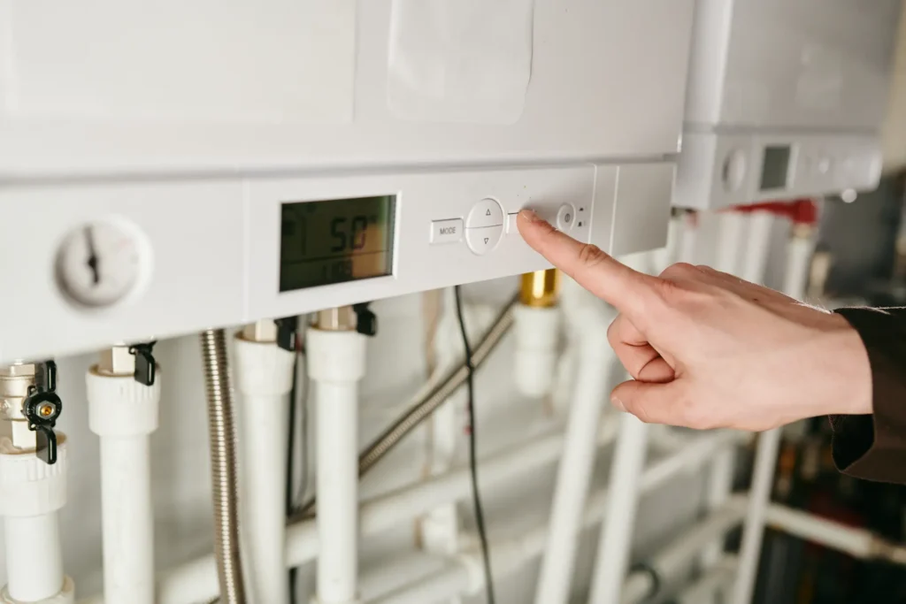
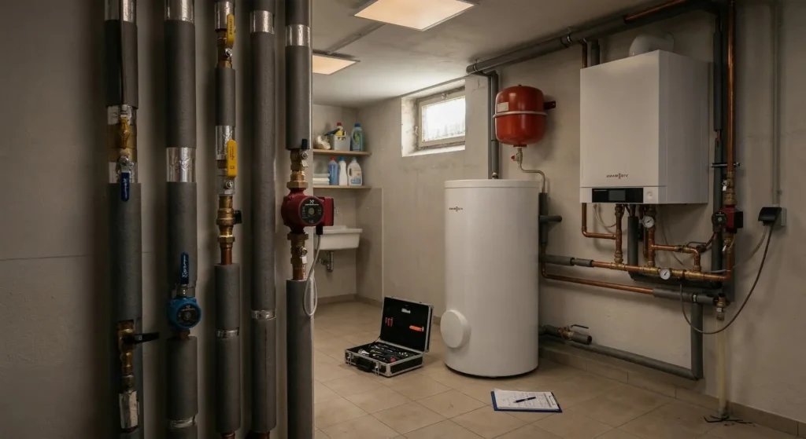
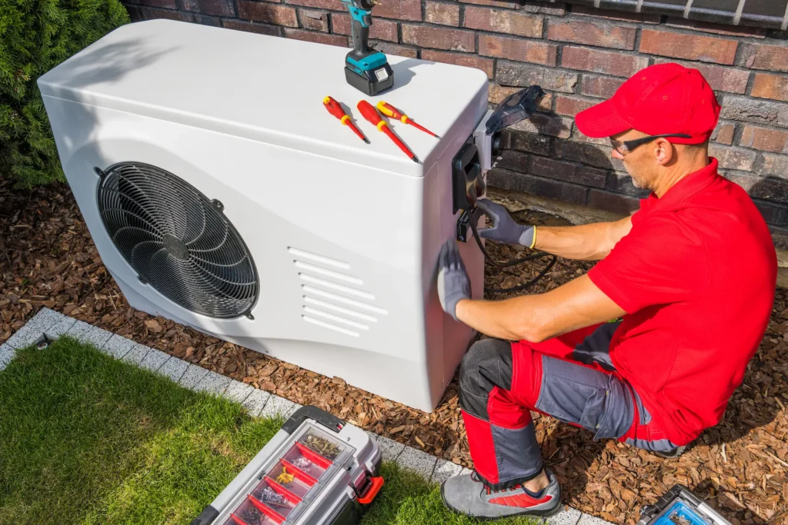

Kesselsanierung Krefeld – schnell, sauber und zum Festpreis. Veraltete Heizkessel verbrauchen bis zu 30 % mehr Energie als nötig und fallen oft im schlimmsten Moment aus.

Heizkessel haben eine Lebensdauer von 15–20 Jahren. Danach steigen Verbrauch und Reparaturkosten deutlich. Das Gebäudeenergiegesetz (GEG) schreibt zudem vor, dass bestimmte alte Konstanttemperaturkessel ausgetauscht werden müssen.
Wir analysieren Ihre Anlage vor Ort und geben Ihnen eine ehrliche Empfehlung: Tausch oder Reparatur?

Wir bauen Ihren alten Kessel fachgerecht aus und entsorgen ihn nach allen gesetzlichen Vorschriften. Sauber und unkompliziert.
Der neue Kessel wird präzise installiert, hydraulisch abgeglichen und vollständig in Betrieb genommen. Sie heizen vom ersten Tag an effizienter.
Nach dem Einbau prüfen wir alles auf Dichtheit und Effizienz. Auf Wunsch schließen wir direkt einen Wartungsvertrag ab.
Manchmal ist ein moderner Gasbrennwertkessel die sinnvollste Lösung – etwa wenn die Heizlast oder das Gebäude noch nicht wärmepumpentauglich ist. In anderen Fällen lohnt es sich, direkt auf eine Wärmepumpe umzusteigen und die volle Förderung mitzunehmen.
Als Viessmann Fachpartner beraten wir Sie ehrlich und zeigen Ihnen beide Optionen mit konkreten Zahlen.
Jetzt beraten lassen
Wir analysieren Ihre Heizanlage vor Ort und empfehlen die optimale Lösung für Ihr Gebäude – Brennwertkessel oder Wärmepumpe.
Unsere Partner-Energieberater prüfen, welche Förderungen für Sie infrage kommen, und übernehmen die vollständige Antragstellung.
Wir installieren Ihre neue Anlage termingerecht und sauber. Alles aus einer Hand – kein Koordinationsstress.
Ein unkomplizierter Kesseltausch ist in der Regel an einem Arbeitstag abgeschlossen. Bei umfangreicheren Arbeiten kann es 2–3 Tage dauern.
Ja, unter bestimmten Umständen. Das Gebäudeenergiegesetz (GEG) schreibt vor, dass bestimmte alte Konstanttemperaturkessel ausgetauscht werden müssen. Wir klären mit Ihnen, ob und wann Handlungsbedarf besteht.
Als Viessmann Fachpartner arbeiten wir bevorzugt mit Viessmann – einer der zuverlässigsten Heizungsmarken am Markt. Auf Wunsch können wir auch andere Marken einbauen.
Typische Projekte liegen zwischen 2.000 und 10.000 €, je nach Anlage und Aufwand. Wir erstellen immer ein verbindliches Festpreisangebot – keine versteckten Kosten.
Ja. Auf Wunsch schließen wir direkt nach der Inbetriebnahme einen Wartungsvertrag ab. So bleibt Ihre Anlage dauerhaft effizient und sicher.